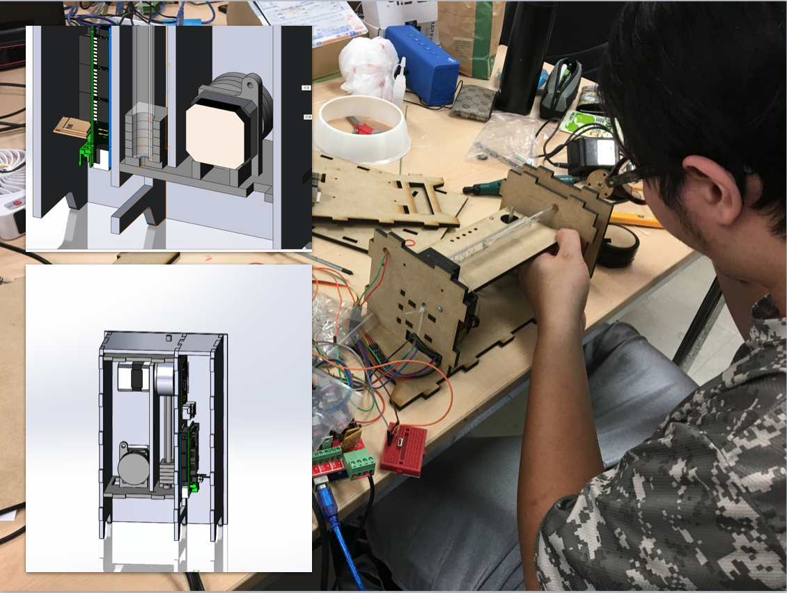
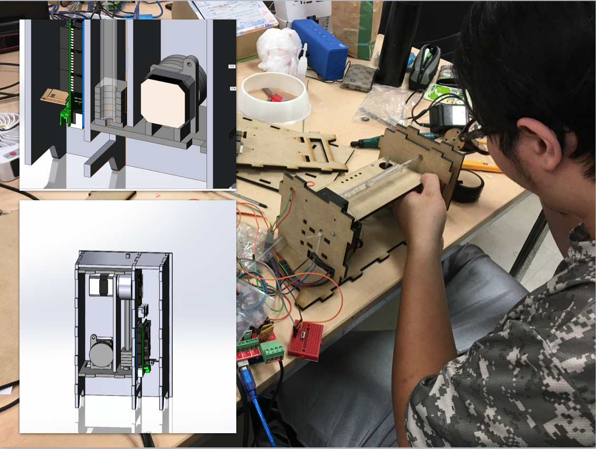

Lynda Lin (Lin Yung-Ta)
GRAVITATION
GRAVITATION
IOT Installation Art Reflects Nature and Artifacts.
凌宗庭、林湧達、陳語宸、張臻然
2017 Spring Net Art Final.
透過一個公共藝術裝置，討論人造物與自然天體的互動。 在地面上，一個浮空的光球，受到月亮的引力吸引，其亮度與月亮盈虧互補，其高度則同步於月亮的起落升降。 這正如潮起潮落的自然牽引，卻因人造飛機的介入，引力受到波盪，當飛機掠過光球，光球急墜落地並撞擊出聲響。 預期裝置將會是多個不等大小的量體，質量不同將使月球對之有不同程度吸引，因而升降的高度不一，而交織出不同的聲響。
[Slide]
Demo
 
